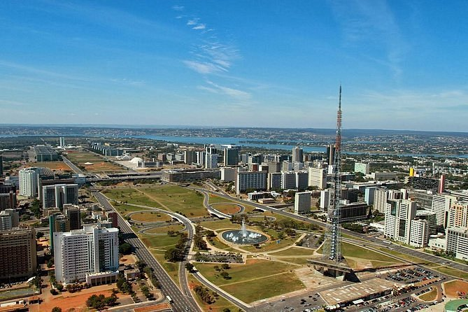

Over Brasília
Brasília is de futuristische hoofdstad van Brazilië, ontworpen door de beroemde architect Oscar Niemeyer. De stad is bekend om zijn innovatieve stadsplanning en moderne architectuur. Het is een geplande stad die bedoeld is om de politieke en administratieve centra van Brazilië te centraliseren.
Bezienswaardigheden
Brasília is een stad die vooral bekend is om zijn iconische moderne architectuur en ruime, goed geplande openbare ruimtes.
- Het Nationaal Congres: De gebouwen van het Congres zijn het symbolische centrum van de politieke macht in Brazilië.
- Cathedraal van Brasília: Deze unieke kathedraal is een van de meest iconische gebouwen in de stad.
- Palácio da Alvorada: Het presidentiële paleis en het officiële huis van de president van Brazilië.
- JK Memorial: Een monument ter nagedachtenis aan de oprichter van de stad, Juscelino Kubitschek.
Activiteiten
Brasília biedt een unieke ervaring voor bezoekers die geïnteresseerd zijn in cultuur, politiek en moderne kunst.
- Stadswandeling: Maak een wandeling door het centrum van de stad en ontdek de beroemde gebouwen van Niemeyer en Lúcio Costa.
- Boottocht op het Paranoá-meer: Geniet van het uitzicht over de stad vanaf het water.
- Verken de parken: De stad heeft veel open ruimtes en parken, zoals het Parque da Cidade.
Geschiedenis van Brasília
Brasília werd in 1960 officieel geopend als de nieuwe hoofdstad van Brazilië, ontworpen om de regering dichter bij het binnenland te brengen en de groei van de kustregio’s te balanceren. Het is een van de weinige geplande hoofdsteden ter wereld.
Klimaat
Brasília heeft een tropisch savanneklimaat, met droge winters en natte zomers. De temperaturen liggen meestal tussen de 15°C in de winter en 28°C in de zomer.